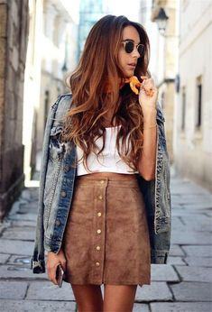
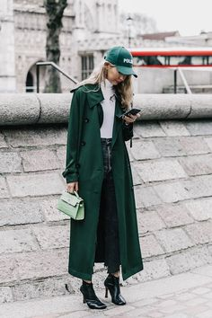
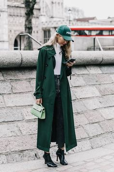

Fashion
Fashion
Ik heb een haat/liefde relatie met kleding. Als kind kocht mama alles voor me en zeg ik er dus uit als een blije gup met dora op der shirt (of mickey mouse lag aan de mood van mama). Daarna werd ik twaalf en werd het een drama, want toen begon ik me te realizeren dat ik mijn kleding op dat moment vreselijk vond. Ik heb vele dingen geprobeerd: tuttig, basic, velle kleuren en zelfs goticish. Begrijp me nu niet verkeerd, ik zeg niet dat deze stijlen lelijk zijn, maar het is niet mijn stijl. Ik ben tot de dag van vandaag steeds meer an het ontwikkelen (kleding-wise) en heb ik best onder de knie wat mijn stijl is.
Nou heb ik jaren moeten strijden om er niet als een 5 jarige op speeds uit te zien, maar daar wil ik jullie mee helpen. Hier onder zijn 5 Holy rules als het gaat om fashion.
5 Fasion Tips
1. Sexy is niet sletterig
1. Sexy is niet sletterig
Huid showen vinden veel mensen sexy, maar dit kan snel ordinair overkomen. Daarom is de goude tip: Kies strategisch wat je showt. Als je je schouders laat zien zorg er dan voor dat bijvoorbeeld je buik bedekt is. Als je je benen Laat zien dan trek je geen tanktop aan. Soms kun je meerdere stukken huid laten zitten, maar er zit een dunne lijn tussen sletterig en classy. STAP ER NIET OVER!

2. Kies goede stretch
Het geheim achter een goede stretch die ook goed zit is het meteriaal. Na lang op het internet te zoeken heb ik de goede ingredienten kunnen vinden voor de perfecte stretch. Voor een t-shirt is het 95% katoen en 5% Lycra spandex. Voor jeans is het handig als je minstens 2% Lycra bevat.
3. Wanneer je twijfelt, NUDE PUMPS!
Nude pumps are a girls best friend. Nude pumps kunnen overal onder en zijn een must-have vorr de kast van iedere meid. Het is neutraal en zorgt ervoor dat de aandacht naar de kleding gaat terwijl je teglijkertijd het mooie effect krijg van hakken.
4. Geniet van Kleuren
De meeste mensen vinden kleuren eng. Matched het wel? Zie ik er nu niet uit als een clown? Kijkt iedereen nu naar me? Daarop heb ik alleen te zeggen probeer het eens. natuurlijk prefereer ik naar velle kleuren zoals geel en rood kun je ook een pastel blauw of oranje dragen. Beter dan je reguliere jeans met een wit shirt.
 

5. Confidence is key
De meeste mensen dat de kleding de persoonmaakt, maar de persoon maakt de kleding. Als jij je er niet goed in voelt zul je dat ook uitsralen. Je kunt ook confidence faken en dan vinden waarschijnlijk vele mensen je outfit geweldig.